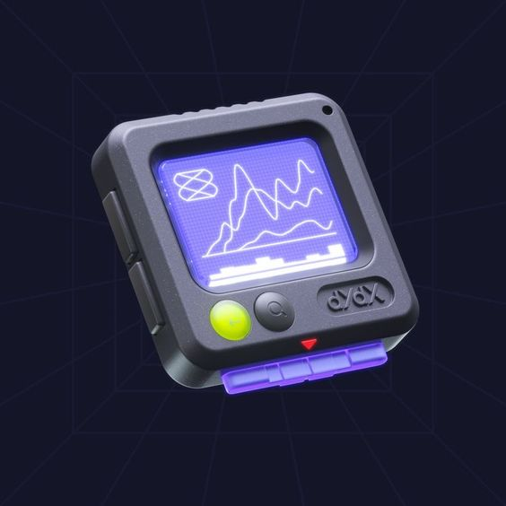

qui sommes nous ?
Le festival d'arts numériques eikonica de Fribourg est l'événement à ne pas manquer pour tous les amateursde nouvelles technologies, d'art contemporain et tous les curieux. Du 13 au 15 octobre, venez explorer une grande variété d'œuvres numériques, allant de l'animation à la réalité virtuelle en passant par les installations interactives. Vous pourrez rencontrer des artistes locaux et internationaux, assister à des conférences passionnantes et participer à des ateliers créatifs. Deux concerts à fri-son permettront de prolonger les festivités.
